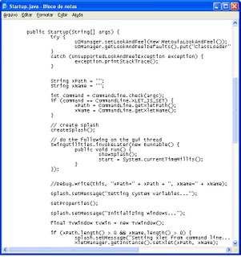
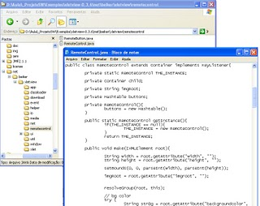
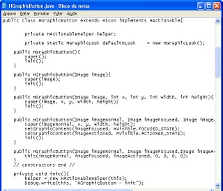
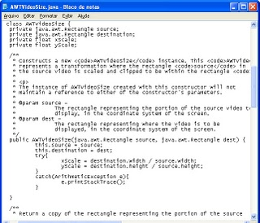
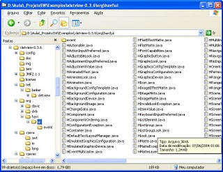

hoje fiz uma coisa que já devia ter feito há muito tempo: baixei e
estou examinando os arquivos fonte do XletView, disponíveis no SourceForge.
não sei como me virei até hoje sem isso : )
é uma excelente fonte de estudo pra quem já iniciou o desenvolvimento de Xlets.





os
JavaDocs que eu já possuía da JavaTV, HAVi e MHP, além do livro
Interactive TV Standards do Steve Morris tb são fundamentais para o
estudo, mas nada como ter os fontes para um entendimento mais completo
do funcionamento.


ferramentas de desenvolvimento
acompanhe este blog


{kind=link}
{kind=link}
{kind=link}
{kind=link}
{kind=link}
sites do SBTVD

desenvolvimento e treinamento
categorias
- API de Integração de Dispositivos (1)
- canal de retorno (7)
- convergência tecnológica (25)
- desenvolvimento (48)
- Ginga (9)
- interatividade (52)
- Java (10)
- Java DTV (13)
- middleware (41)
- NCL (10)
- premios (3)
- tutoriais (6)
- tv digital (110)
arquivo do blog
-
►
2009
(36)
-
►
Setembro
(7)
- I Encontro Nacional do Software Público Brasileiro...
- curso Desenvolvendo Aplicações em Ginga para TV Di...
- Especificação Java DTV 1.2.1 disponível
- UFPB/Ginga-J na Comunidade Ginga do Portal do Soft...
- NY Times (via Terra): TV investe em aplicativos se...
- livro "Programando em NCL" à venda online
- Argentina oficializa adoção do sistema nipo-brasil...
-
►
Setembro
(7)
alguns prêmios recebidos
links
- Ginga (middleware brasileiro)
- Java DTV API 1.0 - Especificação SUN
- Norma Ginga-NCL
- Tutorial NCL e TV Digital
- Tutorial de instalação do JavaTV e XletView
- Como exibir vídeo no XletView
- Middlewares e Bibliotecas para TV digital
- javatv-developers
- Forum JavaTV
- Ginga Wiki
- Sistema Brasileiro de TV Digital
- Grupo de pesquisa em TVDI - UCPEL (Reúne ótimo material)
- Tela Cheia
- Especificações GEM
- RBS TV Digital
- TV Digital no Brasil - Parte I
- Dissertação Márcia Tonieto (Excelente)
- Midiacom - GTVD
- EITV
- DTV
- DTV USA
- Repositório P&D TV Digital
- MHP
- MHP Wiki
- Interactive TV Web
- Interactive TV Today
- Ocap
- HT Forum
- Java Free - Forum
- Produção Profissional
- Mapa de cobertura da TV digital
- Assoc. Bras. de TV Universitária
- Instituto de Estudos de Televisão
- Fabiana Toledo - TVDI
- YouTube TV
- b4it - blog for it
4 comentários:
Opa Marcos, tudo bem ?
gostaria de saber se você pode me passar os links referentes ao javadoc da API Havi, já procurei em alguns sites (inclusive no havi.org) mas não achei nada ainda.
Um abraço.
Maran,
é nesse site mesmo.
Entre no link Technical Info.
Abraço,
Marcos
Cara, qual os sites oficiais para obtenção dos JavaDOCs do MHP, HAVi, DAVIC e JavaTV?
MHP:
http://www.mhp.org/fullspeclist.htm
HAVi:
http://www.havi.org/technical/specifications.asp
Java TV:
https://cds.sun.com/is-bin/INTERSHOP.enfinity/WFS/CDS-CDS_Developer-Site/en_US/-/USD/ViewProductDetail-Start?ProductRef=7625-javatv-1.0-spec-oth-JSpec@CDS-CDS_Developer
Postar um comentário